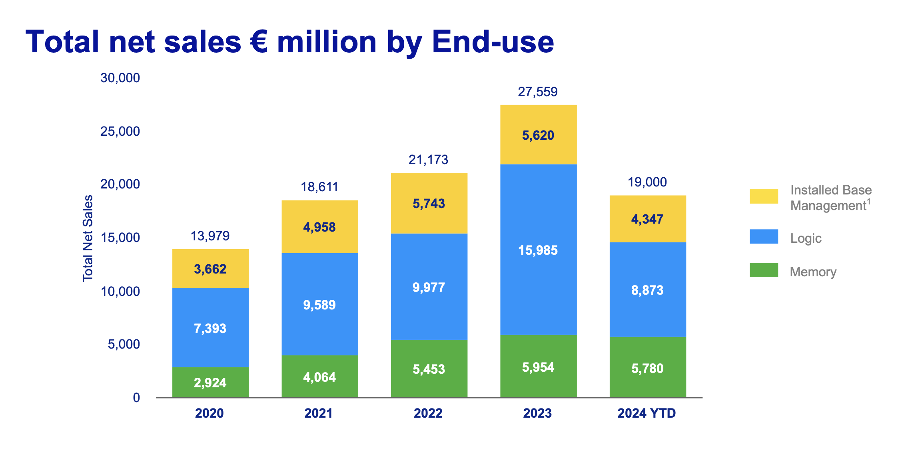
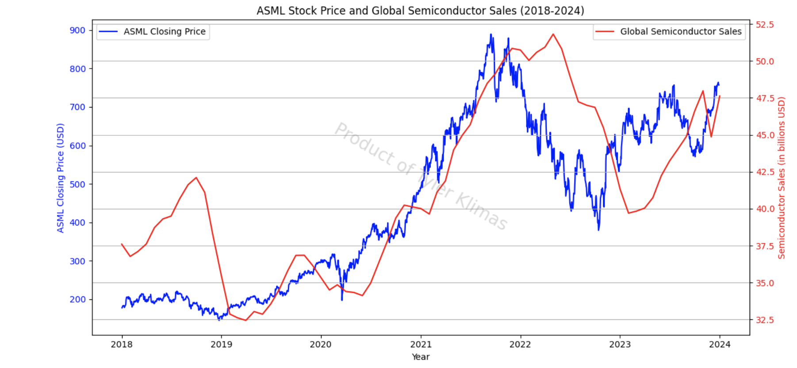

☰

ASML
2024 Q3 Analysis
ASML is a multinational semiconductor tool manufacturer domiciled in the Netherlands, specializing in the design and production of ArFi (Deep Ultraviolet Lithography) and EUV (Extreme Ultraviolet Lithography) machines critical for the production of semiconductor nodes and DRAM memory.
ASML fell nearly 20% after releasing its Q3 earnings reports which reduced its 2025 projected earnings from €30-40B to €30-35B.

The above image gives insight into the revenue of ASML - with predicted total net sales between €8.8 and €9.2 Billion in Q4,
with a notable increase in Installed Base Management - revealing that many fabs are choosing to use their existing equipment until upgrading.
This downturn is due to the highly cyclic business of semiconductor and memory production. Chip sales are often a lagging indicator of upstream industries because of the nature of chip contracts. Semiconductor fabrication is a lengthy process which can take 3-6 months from start to finish due to the complex supply chain and rigorous quality control. Chip fab contracts are set far in advance which means changes in demand don’t immediately affect price.
As seen below, the last peak for consumer electronics and auto & industrial chips was in 2022, and subsequently this market segment has been in a downturn. This cycle is separate from the high performance chips which began to receive significant investment in 2023 and 2024.

ASML sits at the very base of the semiconductor value chain and therefore takes the longest for demand changes to hit the bottom line of ASML’s business.
Fabs notably spend large amounts of CapEx to stay on the bleeding edge of fabrication even during downturns, allowing well capitalized companies to survive the boom and bust of this industry.
AI Breakdown from Market Perspective
Amid the significant investment into AI technologies over the last 2 years, companies positioned to capture value in AI stack have captured immense value.
At the top of the food chain, you have the American hyperscaler companies which operate data centers which much of the world's computing runs on. After Q3 reports for MSFT, AMZN, and META showed impressive earnings amid large CapEx spends for AI infrastructure, CapEx estimates for 2025 are north of $200B. Majority of this spending is in datacenters, where ~75% of CapEx is AI accelerator chips.
Next, you have the American “fabless” chip designers which have received a bulk of the attention over the last 12 months. NVIDIA is now the most valuable company in the world by market cap. Quallcomm, AMD, and Broadcom have all had significant returns even while capturing single digit numbers in this space. Extremely large margins are made in this stack of the value chain, where NVIDIA has margins of 75%. NVIDIA has an incredibly strong moat and will be the largest player in this space for a minimum of 5 years. They have 10,000 software engineers writing the proprietary software CUDA which allows for parallel processing on the chip, greatly increasing the amount of FLOPS and therefore increasingly powerful models.
Below this is the chip foundries, such as TSMC, Samsung, and SMIC, which fabricate the chip designs. TSMC controls this market with 61.7% market share, Samsung sits at 11% amid its growing foundry buildout, and the rest such as SMIC have ~5%. Not only do foundries fabricate leading edge chips, which are highly efficient and used in high end cell phones and data centers, but also fabricate mainstream nodes for vehicles, consumer electronics, etc which are not as constrained for power or speed as their high end counterparts.
Next are the component manufacturers, which are highly regionalized around the globe. South Korea dominates the memory business with Samsung and SK Hynix having a near duopoly in the industry for DRAM and NAND. AI Accelerator chips require a specialized type of DRAM called HBM (High Bandwidth Memory) which is stacked on top of the GPU for better performance by utilizing a larger bus for higher bandwidth as well as multiple channels to increase throughput.
SK Hynix got the first movers advantage leading to a breakout year for them in 2024, but Samsung has recently met quality standards for HBM3E and will likely begin to supply for AI accelerator chips. Japan is the largest producer of the chemicals and silicon wafers (Shin-Etsu, SUMCO, etc). Smaller players like Austria are even specialized in a specific niche in the supply chain of materials (EV group with Multibeam Masks) creating a highly globalized and fragmented global supply chain.
Finally, the group which ASML sits in, is the semiconductor manufacturing equipment providers. ASML competes with Applied Materials, Lam Research, and KLA corporation. These companies produce equipment for etching, patterning, and inspecting silicon wafers. ASML is the sole company which has developed EUV (Extreme Ultraviolet Lithography) and allows for the creation of chips below 5nm. Not only does this industry segment allow for the production of leading edge chip technology, but legacy equipment is still essential in building larger nodes in the 14nm-65nm range as well as for the production of memory chips.